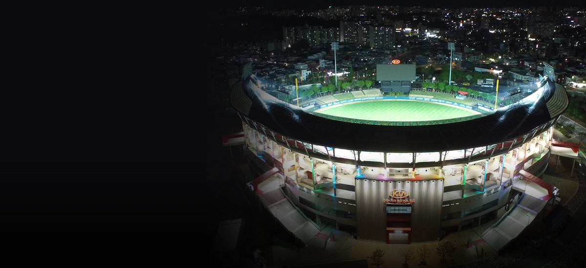
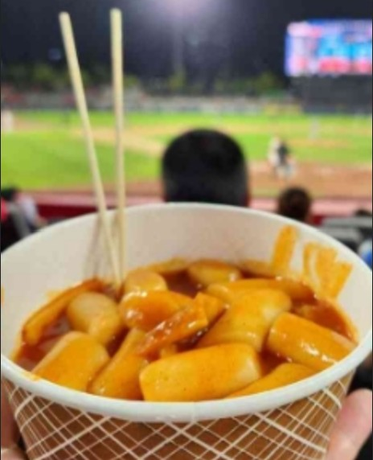
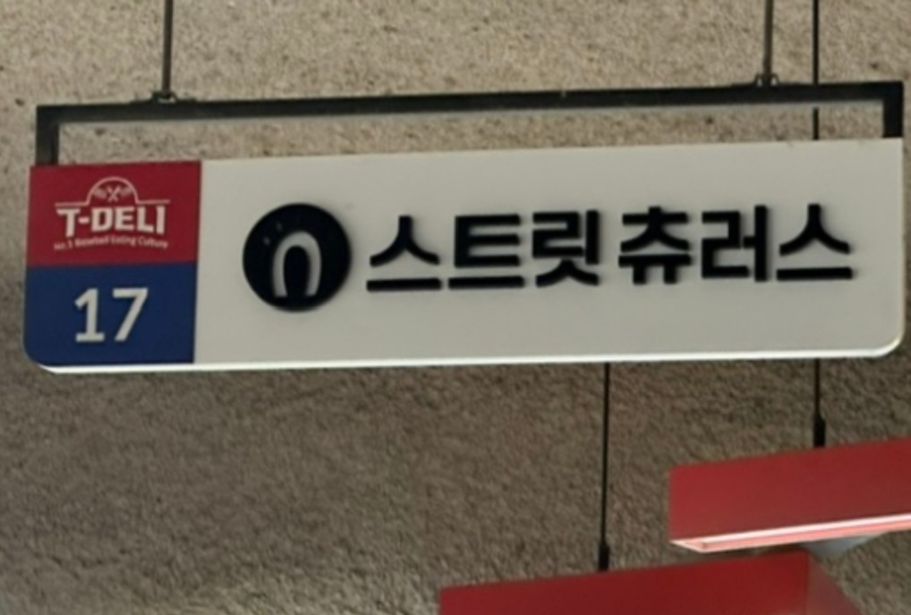
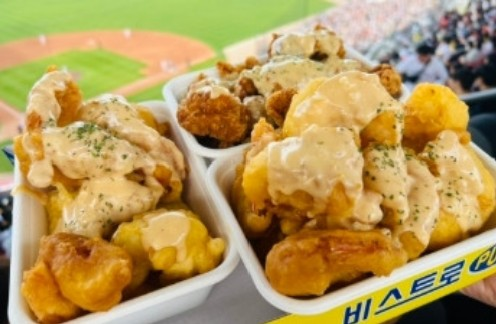

+광주기아챔피언스필드
1. 챔피언스필드 소개
- 2014년 2월 28일에 완공되었으며 2014년부터 KIA 타이거즈 1군 홈 구장으로 사용되고 있다.
대한민국 야구장 중에서는 최초의 개방형 야구장이라는 타이틀을 가지고 있으며, 실질적인 프로 전용 구장이다.
2. 경기장 내 먹거리
- 
- 마성떡볶이
- 언제나 북적이는 인기 매장으로
분식 위주로 판매하며
3층 1루와 3루, 5층 3루에 위치해있다.
- 
- 스트릿츄러스
- 스틱츄러스와 아이스크림을 판매하며
3층 1루 끝 쪽에 있으며
상대적으로 덜 붐빈다.
- 
- 스테이션
- 2024년 가장 큰 인기를 끌고 있는 매장으로
크림새우와 크림 닭강정을 판매하며
1루쪽에 위치해있다.
3. 챔피언스필드만의 특징
★ 3루 홈 관중석
대부분 야구장은 1루에 홈 관중석이 위치해 있으나, 챔피언스 필드는 홈 관중이 3루를 사용한다.
동북동향으로 지어졌기 때문에 햇빛을 덜 받는 3루 쪽이 KIA의 홈 더그아웃이 된다.
프로 야구 경기는 대부분 저녁에 치러지기 때문에 해가 지는 쪽을 등지고 있어야 관중이 햇살을 피해 편하게 관람할 수 있다.
홈 팬들을 더 배려하는 쪽으로 홈 구장의 레이아웃이 정해지므로 홈 관중이 3루를 사용한다.